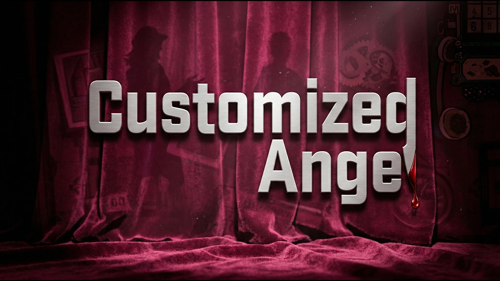
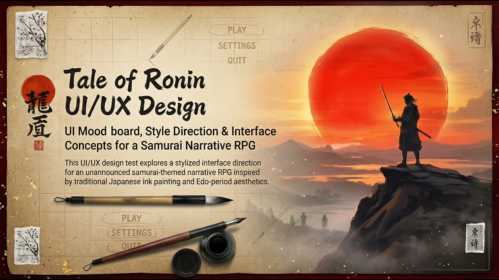
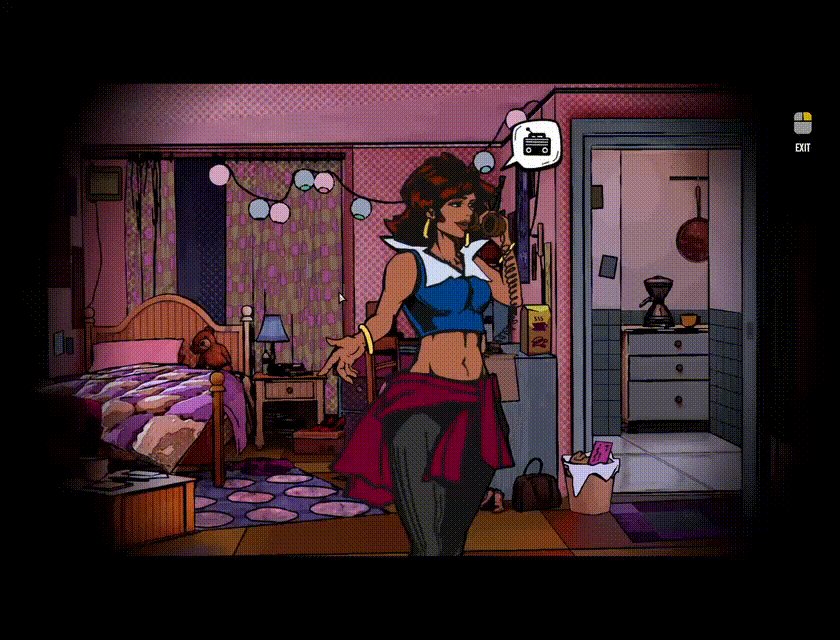

Technical UI Designer · Unreal Engine 5 · 3+ Years
JAIKAR POTHULA
I design and ship gameplay UI in UE5 — menus, HUDs, and diegetic systems built in-engine for real production.
Shipped · The Dark Arrival on SteamOpen to hire
3+ years shipping gameplay UI in UE5. Owned systems on The Dark Arrival (Steam) and Suite 13 — UMG, Blueprint, diegetic interfaces.
Full-time Technical UI / Game UI · Remote or on-site · SF Bay Area
Philosophy
I design and implement UI systems that connect gameplay, narrative, and player interaction.
My work focuses on building modular, scalable UI frameworks in Unreal Engine 5 and Unity that are production-ready and easy to iterate on.
I prioritize clarity, readability, and performance—ensuring UI supports gameplay without breaking immersion. I focus on systems where UI plays a critical role in guiding the player experience.
Recently, I worked on The Dark Arrival: Shadows of the Past and Suite 13, designing and implementing gameplay-driven UI systems.
I developed a 3D Investigator Journal and core interface systems in Unreal Engine using UMG and Blueprint, focusing on structure, reusability, and alignment with gameplay logic and player experience.
Selected Work
UE5 UI Systems
Built for Shipped Gameplay
Technical UI design and in-engine implementation for PC titles — modular UMG frameworks, diegetic interfaces, and production-ready HUDs.
The Dark Arrival
Designed an interactive 3D Investigator Journal system that impacts gameplay decisions directly through diegetic UI interfaces.
Suite 13
Designed and implemented a system-driven gameplay HUD that relies on audio-visual cues and minimal screen clutter to heighten tension.
Customized Angel
Programmed and designed timeline-based UI systems for tracking complex gameplay events and logical deductions.

Tale of Ronin
Designed core interaction systems and visual layout frameworks matching a delicate, sumi-e painted art style.

Find the Dog
Designed a high-contrast visual hierarchy and modular menu system for a mobile live-service game, ensuring readability on small screens without frustrating the casual player.

Find the Octopus
A cute, vibrant hidden-object puzzle built around a baby-octopus mascot. Designed the full casual live-service UI — level progression, timed power-ups, mission rewards and VIP monetization — keeping every screen readable and friendly on small displays.

Smart Guardian
An AI-driven elder safety application featuring fall detection, health monitoring, and an interactive emergency response system.
Approach
Ideas into
Impact
I design UI systems that connect creative vision with scalable technical execution supporting gameplay, narrative, and player decision making.
My approach focuses on clarity under pressure, immersion within the game world, and systems that are efficient to build, iterate, and scale.
System Design
Translating gameplay systems into clear, structured UI that supports player understanding and interaction.
- > Complex Mechanics to UI
- > Timelines & Evidence Boards
- > Information Hierarchy
Architecture
Building modular, scalable UI frameworks that are production-ready and adaptable.
- > UMG & Blueprint Frameworks
- > Reusable Components
- > Cross-Team Scalability
Implementation
Bringing UI systems to life directly in-engine with real gameplay integration.
- > UE5 & Unity Integration
- > Diegetic Interface Logic
- > Performance & Responsiveness
Tools studios use
Career
Experience
3+ years designing & implementing game UI across UE5 and Unity.
Current focus
Technical UI Designer with 3+ years building modular UE5 UI systems (UMG & Blueprint). Flagship work: The Dark Arrival (Steam), Suite 13, and Find the Octopus (Google Play). Looking for full-time Technical UI / Game UI roles — remote or on-site.
Vault Productions Private Limited
Technical UI Designer · Aug 2024 – Present Contract · United States · RemoteOwned UI design and in-engine implementation across The Dark Arrival (Steam), Suite 13, and Find the Octopus (Google Play).
- > Built a 3D Investigator Journal driving narrative and gameplay decisions
- > Architected modular UMG / Blueprint frameworks for menus, HUDs, and diegetic systems
- > Designed casual live-service UI for Find the Octopus — level progression, rewards, and VIP monetization
- > Shipped production UI for The Dark Arrival on Steam (GDC 2026 playable build) — View on Steam ↗
Academy of Art University
Game Development · Sep 2025 – Dec 2025 Part-time · San Francisco, CA · Hybrid- > Collaborated within a cross-functional student team to design and implement core gameplay systems using Unreal Engine and ZBrush
- > Contributed to gameplay mechanics prototyping, asset integration, and iterative system refinement through structured bi-weekly milestone cycles
- > Translated design concepts into functional in-engine implementations, balancing technical constraints with gameplay clarity
- > Documented development workflows, system logic, and production progress; presented iterative builds and technical breakdowns to faculty
- > Participated in structured feedback reviews, incorporating playtest insights into gameplay adjustments and UX improvements
Freelance
UI Designer · Mar 2025 – Aug 2025 Freelance · United States · Remote- > Led end-to-end UI/UX design for Nekurati, defining menu architecture, interaction patterns, and visual identity aligned with the game’s fantasy world-building
- > Designed main menu systems, interactive controls, and navigation flows to improve clarity and reduce user friction during gameplay
- > Developed custom fantasy-themed UI assets (crystal, dragon, ornamental motifs) to reinforce narrative tone while maintaining functional hierarchy
- > Built high-fidelity prototypes in Figma and translated finalized assets into engine-ready UI elements
- > Established typography standards and button interaction states to improve readability, accessibility, and overall UX
Customized Angel – Academic Project
Academy of Art University · Feb 2025 – May 2025 Apprenticeship · San Francisco Bay Area · On-site- > Collaborated with a 5-person international team to design and develop a 2D game prototype
- > Worked as Designer & Programmer, focusing on UI systems and interactive mechanics
- > Created visual branding and UI animations using Adobe Creative Suite and Unity
- > Coordinated weekly team reviews to ensure consistent delivery of creative assets
Skills & Tools
What studios ask for on Technical UI / Game UI roles — engines, pipeline, and day-to-day production tools.
Engine & Systems
- Unreal Engine 5 (UMG)
- Widget Blueprints
- Common UI / Slate
- Enhanced Input
- Unity (C# · uGUI)
- Modular UI Architecture
UI Implementation
- HUDs & Menus
- UI State Machines
- 3D / Diegetic UI
- Animation & Motion
- Resolution & Safe Area
- Performance Profiling
Design Pipeline
- Figma (components & prototypes)
- Photoshop · Illustrator
- After Effects (UI motion)
- Figma → Engine handoff
- Style guides & UI kits
- Playtest iteration
Production
- Git · Perforce
- Jira · Confluence
- Technical documentation
- Cross-discipline collab
- Milestone delivery
- Remote / hybrid workflow
Documentation
Beyond Design
A deeper look into my work designing and implementing gameplay-driven UI systems across Unreal Engine 5. Focused on in-engine UI, system architecture, and building scalable interfaces that support real-time gameplay.
Output
The in-engine main menu system running live, previewed exactly as it plays in-build.

Live Source Files
Access the raw UI architecture, blueprints, and interactive prototypes directly via Figma.
Visual Showcase
Systems
in motion & in-engine
A curated collection of UI motion, menu prototypes, layout structures, and in-engine implementations across my recent projects.




Writing
Writing &
Insights
Mind & Art Human Touch in Game UI
Exploring how intuition and artistic intent shape immersive UI and player experience.
Designing the Lens UI as Player Experience
A reflection on designing UI as the player’s primary connection to gameplay.
Shift: Last Fare UI & Narrative Design
Examining how UI supports storytelling through diegetic design and immersion.